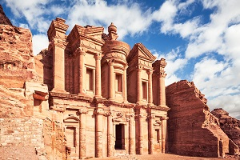
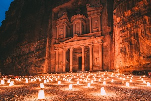

Jordan Takes You Beyond
Jordan, an Arab nation on the east bank of the Jordan River.
About Jordan
Jordan (Arabic: الأردن Al-ʾUrdunn [al.ʔur.dunː]), officially the Hashemite Kingdom of Jordan (Arabic: المملكة الأردنية الهاشمية Al-Mamlakah al-’Urdunniyyah Al-Hāshimiyyah), is an Arab country in Western Asia, on the East Bank of the Jordan River. Jordan is bordered by Saudi Arabia to the south and the east, Iraq to the north-east, Syria to the north and Israel and the Palestinian West Bank to the west. The Dead Sea is located along its western borders and the country has a 26-kilometre (16 mi) coastline on the Red Sea in its extreme south-west.[7] Jordan is strategically located at the crossroads of Asia, Africa and Europe.[8] The capital, Amman, is Jordan's most populous city as well as the country's economic, political and cultural centre.[9] What is now Jordan has been inhabited by humans since the Paleolithic period. Three stable kingdoms emerged there at the end of the Bronze Age: Ammon, Moab and Edom. Later rulers include the Nabataean Kingdom, the Roman Empire, and the Ottoman Empire. After the Great Arab Revolt against the Ottomans in 1916 during World War I, the Ottoman Empire was partitioned by Britain and France. The Emirate of Transjordan was established in 1921 by the Hashemite, then Emir, Abdullah I, and the emirate became a British protectorate. In 1946, Jordan became an independent state officially known as the Hashemite Kingdom of Transjordan, but was renamed in 1949 to the Hashemite Kingdom of Jordan after the country captured the West Bank during the 1948 Arab–Israeli War and annexed it until it was lost to Israel in 1967. Jordan renounced its claim to the territory in 1988, and became one of two Arab states to sign a peace treaty with Israel in 1994.[10] Jordan is a founding member of the Arab League and the Organisation of Islamic Co-operation. The sovereign state is a constitutional monarchy, but the king holds wide executive and legislative powers. Jordan is a relatively small, semi-arid, almost landlocked country with an area of 89,342 km2 (34,495 sq mi) and a population numbering 10 million, making it the 11th-most populous Arab country. Sunni Islam, practiced by around 95% of the population, is the dominant religion in Jordan and coexists with an indigenous Christian minority. Jordan has been repeatedly referred to as an "oasis of stability" in a turbulent region. It has been mostly unscathed by the violence that swept the region following the Arab Spring in 2010.[11] From as early as 1948, Jordan has accepted refugees from multiple neighbouring countries in conflict. An estimated 2.1 million Palestinian and 1.4 million Syrian refugees are present in Jordan as of a 2015 census.[3] The kingdom is also a refuge to thousands of Iraqi Christians fleeing persecution by ISIL.[12] While Jordan continues to accept refugees, the recent large influx from Syria placed substantial strain on national resources and infrastructure.[13] Jordan is classified as a country of "high human development" with an "upper middle income" economy. The Jordanian economy, one of the smallest economies in the region, is attractive to foreign investors based upon a skilled workforce.[14] The country is a major tourist destination, also attracting medical tourism due to its well developed health sector.[15] Nonetheless, a lack of natural resources, large flow of refugees and regional turmoil have hampered economic growth.[16]
Etymology
See also: Jordan River § Etymology Jordan takes its name from the Jordan River which forms much of the country's northwestern border.[17] While several theories for the origin of the river's name have been proposed, it is most plausible that it derives from the Semitic word Yarad, meaning "the descender", reflecting the river's declivity.[18] Much of the area that makes up modern Jordan was historically called Transjordan, meaning "across the Jordan", used to denote the lands east of the river.[18] The Old Testament refers to the area as "the other side of the Jordan".[18] Early Arab chronicles referred to the river as Al-Urdunn, corresponding to the Semitic Yarden.[19] Jund Al-Urdunn was a military district around the river in the early Islamic era.[19] Later, during the Crusades in the beginning of the second millennium, a lordship was established in the area under the name of Oultrejordain.[20]History
The oldest evidence of hominid habitation in Jordan dates back at least 200,000 years.[21] Jordan is rich in Paleolithic (up to 20,000 years ago) remains due to its location within the Levant where expansions of hominids out of Africa converged.[22] Past lakeshore environments attracted different hominids, and several remains of tools have been found from this period.[22] The world's oldest evidence of bread-making was found in a 14,500 years old Natufian site in Jordan's northeastern desert.[23] The transition from hunter-gatherer to establishing populous agricultural villages occurred during the Neolithic period (10,000–4,500 BC).[24] 'Ain Ghazal, one such village located in today's eastern Amman, is one of the largest known prehistoric settlements in the Near East.[25] Dozens of plaster statues of the human form dating to 7250 BC or earlier were uncovered there and they are among the oldest ever found.[26] Other than the usual Chalcolithic (4500–3600 BC) villages such as Tulaylet Ghassul in the Jordan Valley,[27] a series of circular stone enclosures in the eastern basalt desert−whose purpose remains uncertain–have baffled archaeologists.[28]Climate of Jordan
The climate in Jordan varies greatly. Generally, the further inland from the Mediterranean, greater contrasts in temperature occur and the less rainfall there is.[17] The country's average elevation is 812 m (2,664 ft) (SL).[17] The highlands above the Jordan Valley, mountains of the Dead Sea and Wadi Araba and as far south as Ras Al-Naqab are dominated by a Mediterranean climate, while the eastern and northeastern areas of the country are arid desert.[117] Although the desert parts of the kingdom reach high temperatures, the heat is usually moderated by low humidity and a daytime breeze, while the nights are cool.[118] Summers, lasting from May to September, are hot and dry, with temperatures averaging around 32 °C (90 °F) and sometimes exceeding 40 °C (104 °F) between July and August.[118] The winter, lasting from November to March, is relatively cool, with temperatures averaging around 13 °C (55 °F).[117] Winter also sees frequent showers and occasional snowfall in some western elevated areas.[117]Experiences

Jordan Experience established in 1998 and has become the largest inbound tour operator in Jordan as it’s a member of the Jordan Society of tourism and travel agents; it’s based in Jordan with three main branches, owned and operated by Mr. Saleh Helalat.
Discovers
The sweeping desert and echoing formations of Wadi Rum, the hidden, hand-hewn facades of Petra and the ancient Roman ruins at Jerash all make Jordan a true adventurer’s paradise. Venture across bizarre distant lands without forgoing familiar home-comforts on this upgraded journey through the jewel in the Middle Eastern crown.
Attraction
Jordan, an Arab nation on the east bank of the Jordan River, is defined by ancient monuments, nature reserves and seaside resorts. It’s home to the famed archaeological site of Petra, the Nabatean capital dating to around 300 B.C. Set in a narrow valley with tombs, temples and monuments carved into the surrounding pink sandstone cliffs, Petra earns its nickname, the "Rose City."